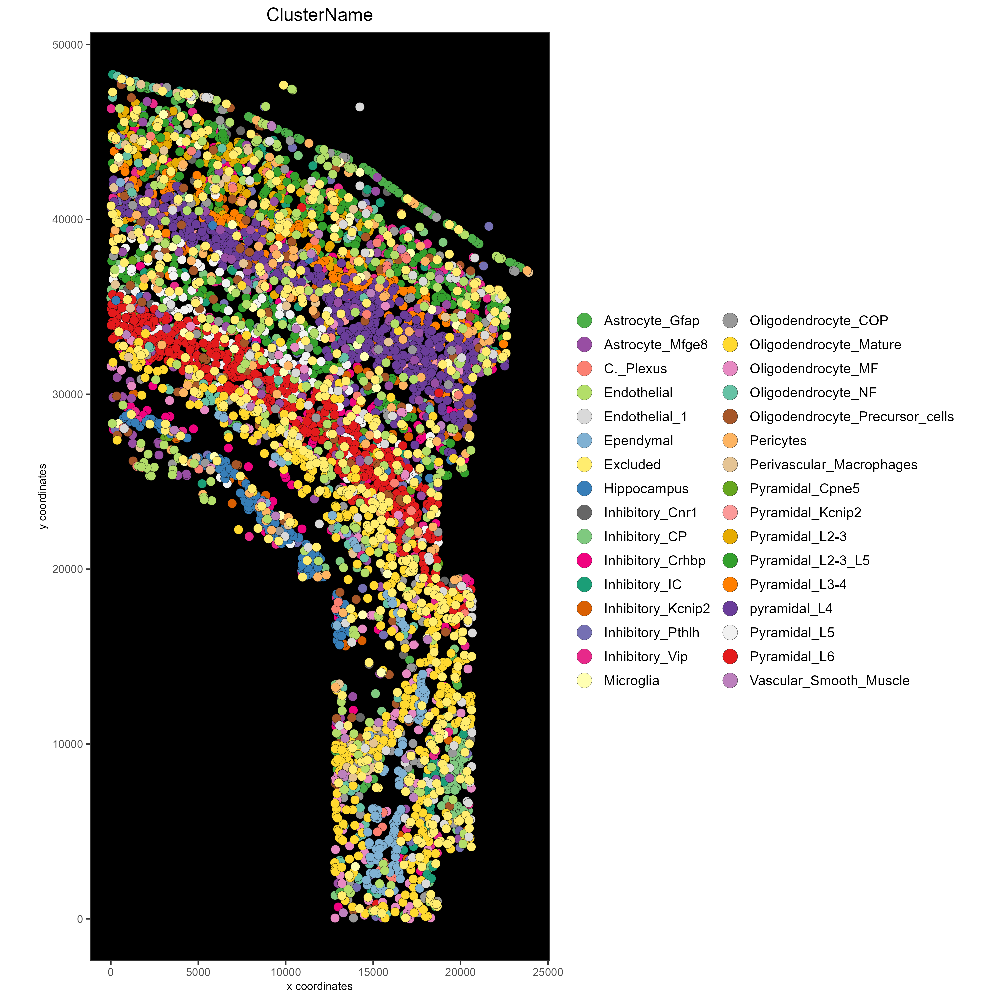

1. Explanation
This tutorial walks through saving spatial data in plots. Please see the Configuration and Giotto Object vignettes before walking through this tutorial.
R/Posit and Giotto provide different ways to save spatial data. Here, a giottoObject will be created without using giottoInstructions so that the save parameters for plotting functions within Giotto as well as the default saving methods built into R/Posit may be emphasized here. Note that for plotting functions, all parameters available to the save_param argument may be found by running showSaveParameters().
2. Start Giotto
# Ensure Giotto Suite is installed
if(!"Giotto" %in% installed.packages()) {
devtools::install_github("drieslab/Giotto@suite")
}
library(Giotto)
# Ensure Giotto Data is installed
if(!"GiottoData" %in% installed.packages()) {
devtools::install_github("drieslab/GiottoData")
}
library(GiottoData)
# Ensure the Python environment for Giotto has been installed
genv_exists = checkGiottoEnvironment()
if(!genv_exists){
# The following command need only be run once to install the Giotto environment
installGiottoEnvironment()
}3. Create a Giotto object
Since the focus of this vignette is saving methods, the giottoObject will not be created with giottoInstructions. See Giotto Object for further intuition on working with a giottoObject that has been provided instructions.
data_directory = paste0(getwd(),'/')
# Download dataset
getSpatialDataset(dataset = 'osmfish_SS_cortex',
directory = data_directory, method = 'wget')
# Specify path to files
osm_exprs = paste0(data_directory, "osmFISH_prep_expression.txt")
osm_locs = paste0(data_directory, "osmFISH_prep_cell_coordinates.txt")
meta_path = paste0(data_directory, "osmFISH_prep_cell_metadata.txt")
## CREATE GIOTTO OBJECT with expression data and location data
my_gobject = createGiottoObject(expression = osm_exprs,
spatial_locs = osm_locs)
metadata = data.table::fread(file = meta_path)
my_gobject = addCellMetadata(my_gobject,
new_metadata = metadata,
by_column = T,
column_cell_ID = 'CellID')4. Standard R Save Methods
Note that by default, plotting functions will return a plot object that may be saved or further manipulated. Manually save plot as a PDF in the current working directory:
save_path = paste0(getwd(),'/first_plot.pdf')
library(ggplot2)
# This function serves only to ensure the following lines run consecutively.
save_pdf_plot = function(){
pdf(file = save_path, width = 7, height = 7)
pl = spatPlot(my_gobject)
dev.off()
}
save_pdf_plot()
### Plot clusters, edit plot object, then save using the ggplot add-on, cowplot:
mypl = spatPlot(gobject = my_gobject,
cell_color = 'ClusterName')
# Add a black background
mypl = mypl + theme(panel.background = element_rect(fill ='black'),
panel.grid = element_blank())
# Add a legend
mypl = mypl + guides(fill = guide_legend(override.aes = list(size=5)))
# Save in the current working directory
cowplot::save_plot(plot = mypl,
filename = 'clusters_black.png',
path = getwd(),
device = png(),
dpi = 300,
base_height = 10,
base_width = 10)
5. Save Plot Directly to the Default Folder
The default save folder is the current working directory. This will be the case if instructions are not provided, or if a save_dir is not specified within giottoInstructions. See the createGiottoInstructions documentation and Giotto Object for default arguments and more details.
spatPlot(my_gobject,
cell_color = 'ClusterName',
save_plot = TRUE)
6. Save plot Directly, but Overwrite Default Save Parameters
In this example, assume it is desired that the plot is: - Shown in the console - Not returned as an object from the plotting function call -Saved in a subdirectory of the current working directory as a .png file with a dpi of 200, height of 9 inches, and width of 9 inches. - Saved with the file name “my_name”
See Giotto Object for more details.
Run the command showSaveParameters() to see all available parameters.
# Specify new subdirectory name
results_directory = 'my_subfolder/'
# Plot clusters, create, and save to a new subdirectory with specifications above.
spatPlot(my_gobject,
cell_color = 'ClusterName',
save_plot = TRUE,
return_plot = FALSE,
save_param = list(save_folder = results_directory, # Create subdirectory
save_name = 'my_name',
save_format = 'png',
units = 'in',
base_height = 9,
base_width = 9))
7. Just View the Plot
See Giotto Object for more details.
Set both save_plot and return_plot to FALSE.
# Plot without saving
spatPlot(my_gobject,
cell_color = 'ClusterName',
save_plot = FALSE, return_plot = FALSE, show_plot = T)
8. Just save the plot (FASTEST for large datasets!)
See Giotto Object for more details.
Set show_plot and return_plot to FALSE, set save_plot to TRUE.
9. Session Info
R version 4.2.2 (2022-10-31 ucrt)
Platform: x86_64-w64-mingw32/x64 (64-bit)
Running under: Windows 10 x64 (build 22621)
Matrix products: default
locale:
[1] LC_COLLATE=English_United States.utf8
[2] LC_CTYPE=English_United States.utf8
[3] LC_MONETARY=English_United States.utf8
[4] LC_NUMERIC=C
[5] LC_TIME=English_United States.utf8
attached base packages:
[1] stats graphics grDevices utils datasets methods base
other attached packages:
[1] ggplot2_3.4.1 GiottoData_0.2.1 Giotto_3.2.1
loaded via a namespace (and not attached):
[1] Rcpp_1.0.10 RColorBrewer_1.1-3 pillar_1.9.0 compiler_4.2.2
[5] tools_4.2.2 digest_0.6.30 jsonlite_1.8.3 evaluate_0.20
[9] lifecycle_1.0.3 tibble_3.2.1 gtable_0.3.3 lattice_0.20-45
[13] png_0.1-7 pkgconfig_2.0.3 rlang_1.1.0 Matrix_1.5-1
[17] cli_3.4.1 rstudioapi_0.14 parallel_4.2.2 yaml_2.3.7
[21] xfun_0.38 fastmap_1.1.0 terra_1.7-18 withr_2.5.0
[25] dplyr_1.1.1 knitr_1.42 systemfonts_1.0.4 rappdirs_0.3.3
[29] generics_0.1.3 vctrs_0.6.1 cowplot_1.1.1 grid_4.2.2
[33] tidyselect_1.2.0 reticulate_1.26 glue_1.6.2 data.table_1.14.6
[37] R6_2.5.1 textshaping_0.3.6 fansi_1.0.4 rmarkdown_2.21
[41] farver_2.1.1 magrittr_2.0.3 scales_1.2.1 codetools_0.2-18
[45] htmltools_0.5.4 colorspace_2.1-0 ragg_1.2.4 labeling_0.4.2
[49] utf8_1.2.3 munsell_0.5.0